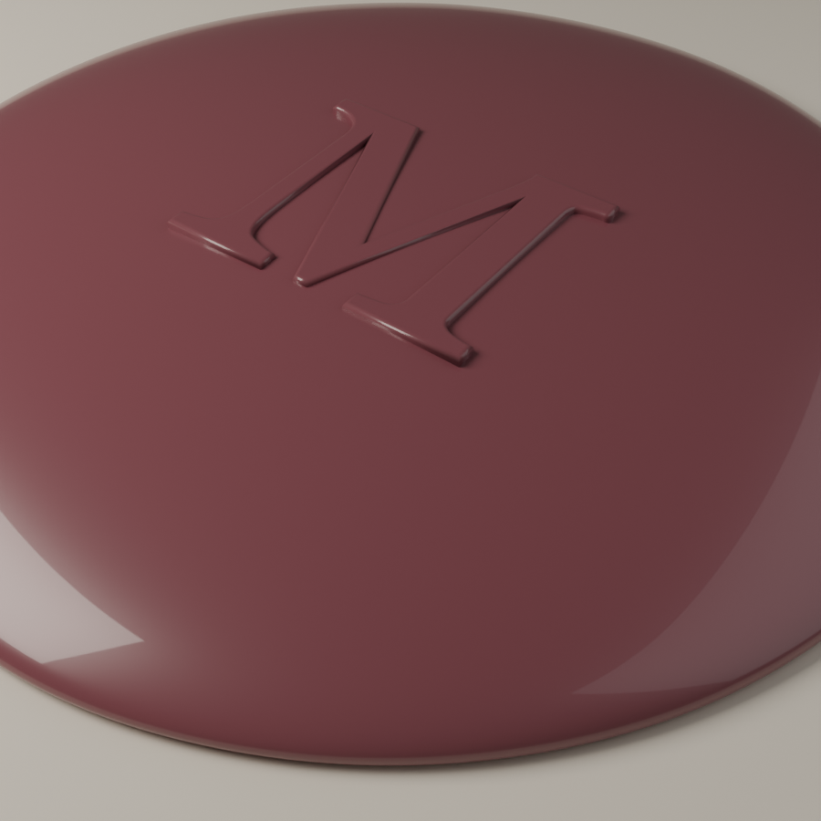
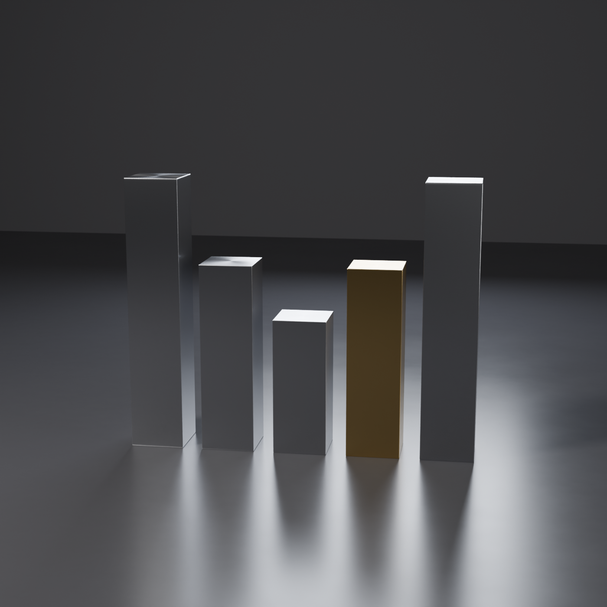

Mudavym · OD-106 · Blender renders · sketch, not production
Three marks in the third dimension
Physical readings of three direction motifs — rendered in Blender (Cycles) as brand-asset explorations: hero images, empty states, loading moments, or the seed of a real mark. Each belongs to one of the five direction boards (077–081).

The Seal081 The Ledger — the act-of-record made physical: burgundy wax, relief M (Georgia), warm paper. The approve moment.The Ember079 The Cellar — the one glowing thing in the dark is always the next decision. Candlelight as attention semantics.

The Meter M078 The Instrument — five radius-0 bars dip into an M; grayscale data, one amber anomaly. The logo obeys the chart rule.